apache高级配置
一、安装
- yum install httpd -y ##安装
- firewall-cmd --permanent --add-service=http ##防火墙配置
- systemctl restart firewalld ##重启防火墙
二、配置文件/etc/httpd/conf/httpd.conf
实验过程中要注意安全上下文的一致，
DocumentRoot "/var/www/html" ##默认发布目录
DirectoryIndex index.html ##默认发布文件
默认打开
更改默认发布目录为/var/www/
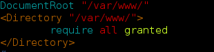
更改默认发布文件为text
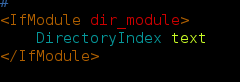
编辑文件text写上内容
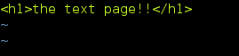
默认打开文件变为我们设置的text
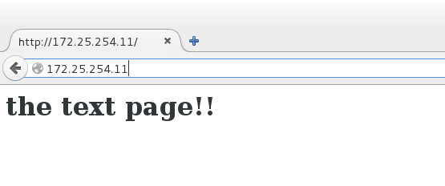
三、虚拟主机
- 通常一个父域下由许多子域，每个子域由不同的功能，所以访问每个子域时，都应该访问子域的文件，所以虚拟主机允许您从一个httpd服务器同时为多个网站提供服务。在本节中,我们将了解基于名称的虚拟主机其中多个主机名都指向同一个IP地址,但是Web服务器根据用于到达站点的主机名提供具有不同内容的不同网站
还原上一步的更改后。
创建目录,不同子域的发布目录。
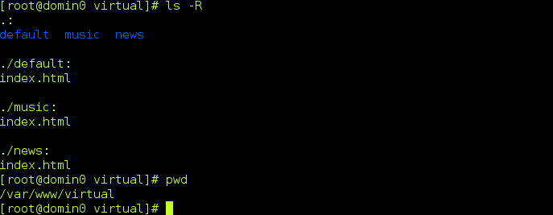
配置/etc/hosts
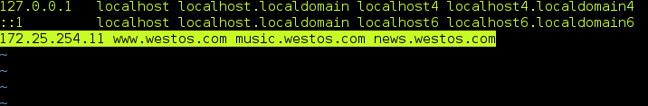
编辑http配置文件
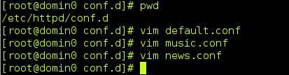
default.conf
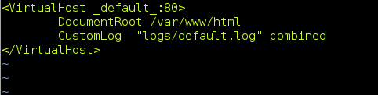
music.conf
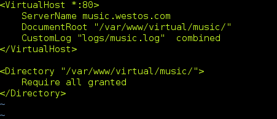
news.conf
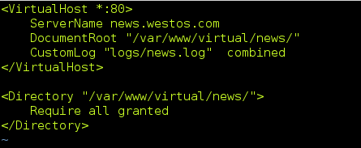
重启服务，访问不同的域名时，会访问到不同的文件。
-------------------------------------------------
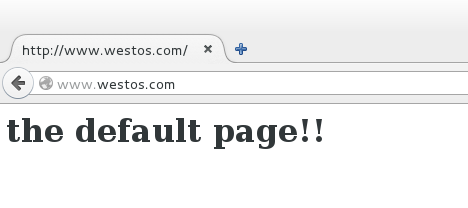
-------------------------------------------------
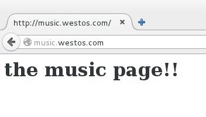
--------------------------------------------
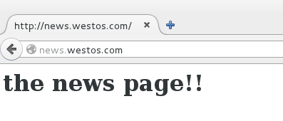
------------------------------------------------
四、身份验证
设置172.25.254.11不允许访问
先读allow，后读deny，deny会覆盖部分allow的权限
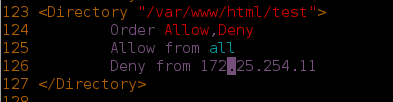
效果
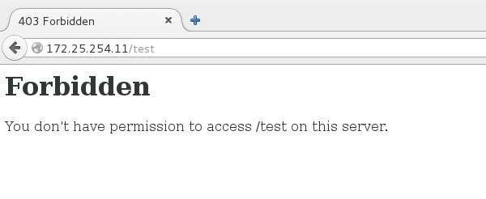
---------------------------------------------------
2、虚拟用户访问控制
1、在/etc/httpd/目录下创建用户，生成用户文件。
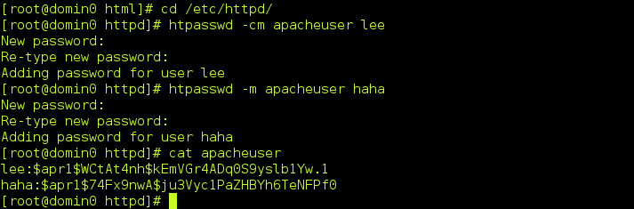
可以看出文件有两个用户。
2、配置httpd配置文件，关联用户文件，
require user lee 只允许lee用户登陆。
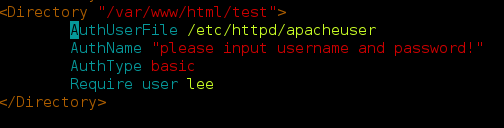
测试
用户lee能正常登陆，而haha这个用户是登不上的。
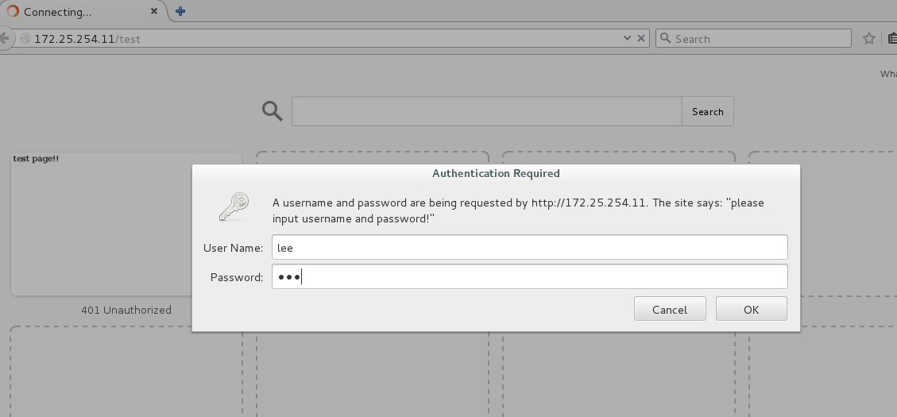
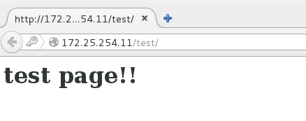
-----------------------------------------------
五、Https
- Https访问时自动对数据加密，为了网络数据传输的安全
- 对Https访问，需要安装mod_ssl
yum install mod_ssl
- 此时配置目录自动生成ssl.conf配置文件
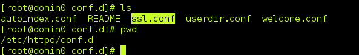
- 访问时说网站证书不可信。
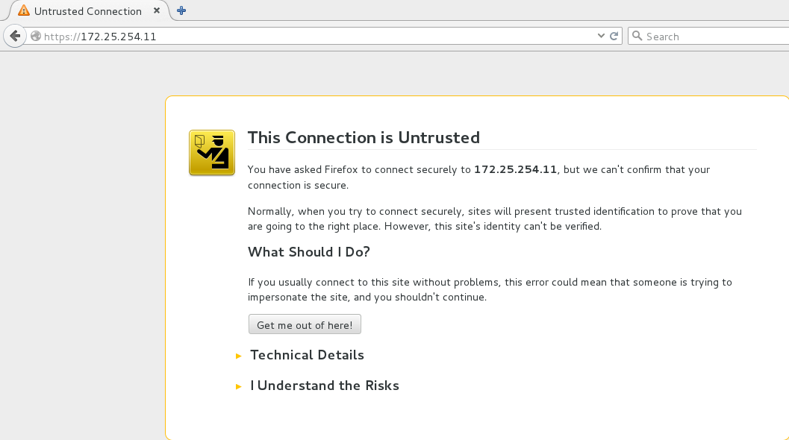
- 生成证书。
- 首先安装软件crypto-utils.x86_64
- yum install crypto-utils.x86_64
- 证书制作
告诉我们生成的路径
然后就是秘史多少位，选择快的1024位
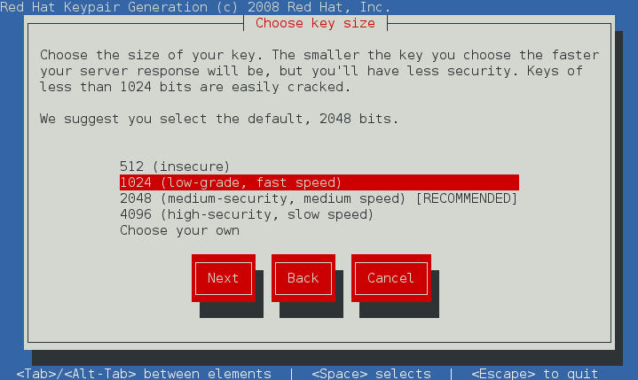
然后就是生成的过程，可能需要等一会。
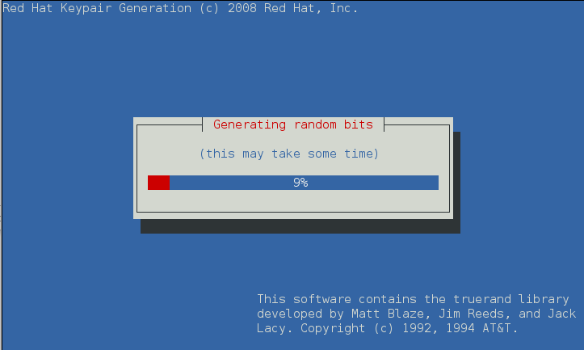
完事后就到这一步了。是否发送到ca认证，选择否。
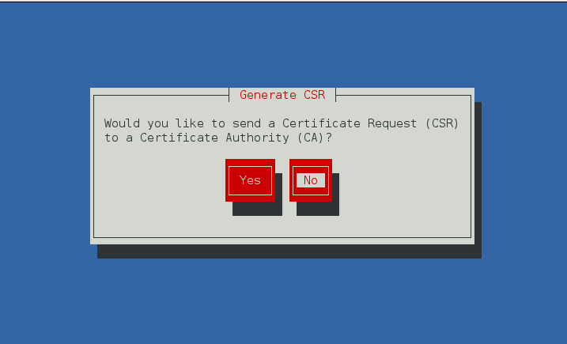
是否加密私钥，next。
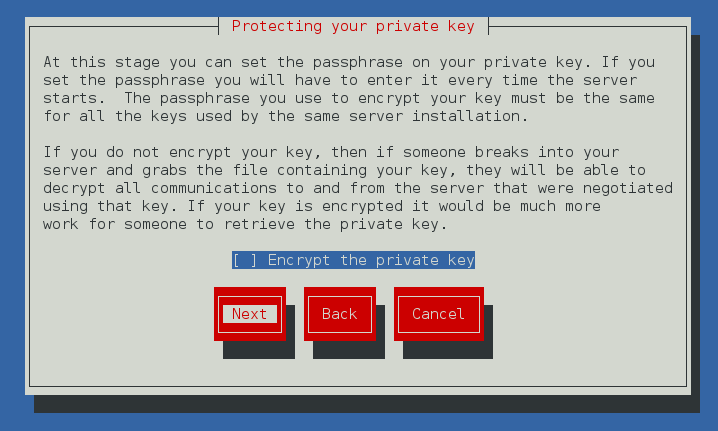
填写信息，next，就ok
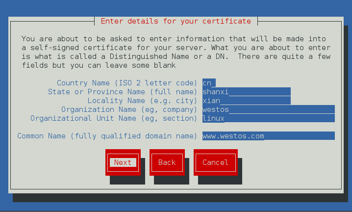
- 生成了两个文件
/etc/pki/tls/certs/www.westos.com.crt
/etc/pki/tls/private/www.westos.com.key
配置ssl.conf
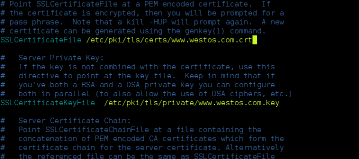
给网站添加证书，点add execption
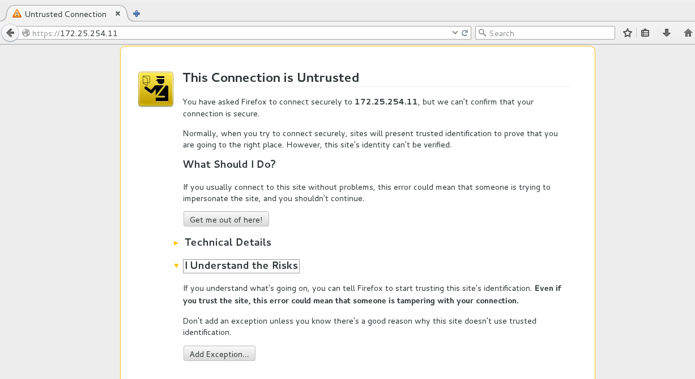
点get certificate,然后点confirm security exception
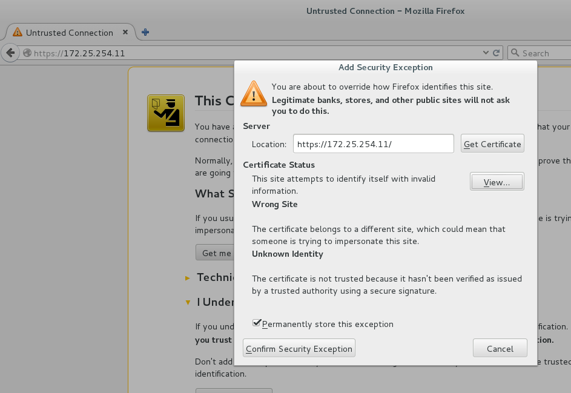
就ok了，网站证书为我们刚才生成的。
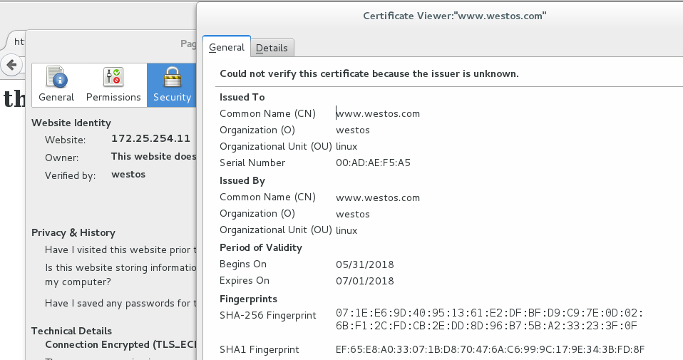
六、Https地址转换
1、配置/etc/httpd/conf.d/login.conf的http配置文件
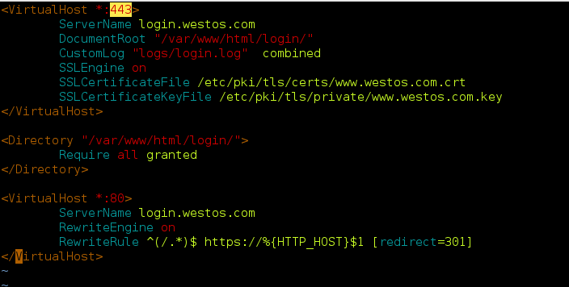
建立/var/www/html/login 建立默认发布文件/var/www/html/login/index.html
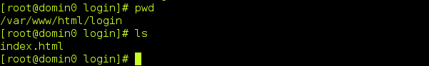
修改/etc/hosts
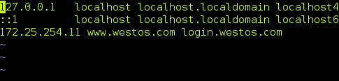
然后重启服务，给网页login.westos.com刚才的证书，
然后登陆http://login.westos.com 会自动跳转到https://login.westos.com页面。
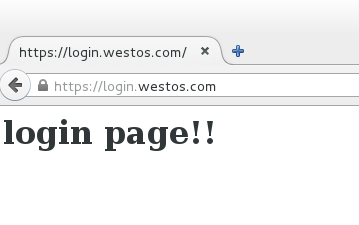
--------------------------------------------------
七、代理服务器 Squid
- 正向代理
- yum install squid
- vim /etc/squid/squid.conf
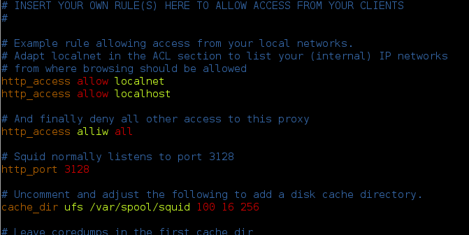
然后其他主机就能设置代理为squid服务器ip:3128端口，来通过squid服务器上网了，一般用于翻墙。
- 反向代理，（相当于代理apache服务器）
- 配置/etc/squid/squid.conf
- 注意要配置防火墙能通过http服务
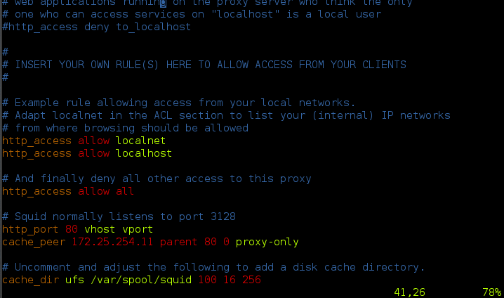
然后172.25.254.111浏览器访问squid服务器地址，会得到apache的172.25.254.11上发布的内容。
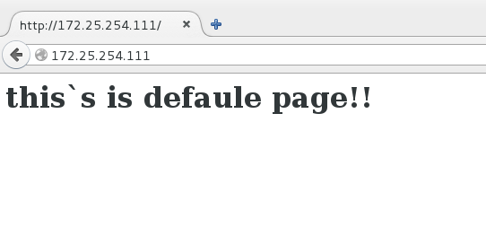
----------------------------------------------------------------------
八、搭建论坛
- 安装php、mod_ssl、http、php-mysql、mariadb-server
- 把论坛数据包放在httpd默认发不目录，解压。Discuz_X3.2_SC_UTF8.zip（这是我下载好的）
- chmod 777 upload/ -R #添加权限
- systemctl restart httpd.service
- 访问http://172.25.254.108/upload进行网页安装
解压后生成upload文件夹
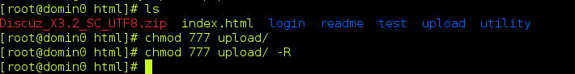
登陆网页172.25.254.11/upload
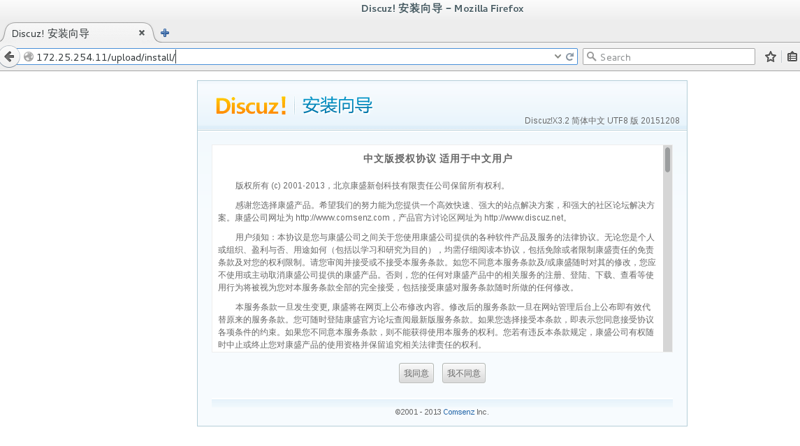
然后检测各种软件情况，当全部通过点击下一步，
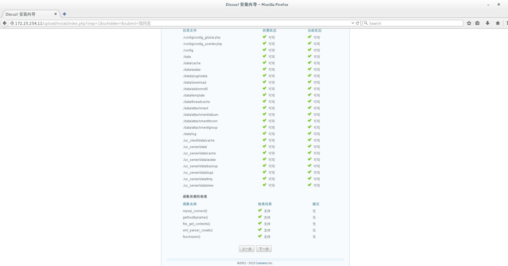
点下一步
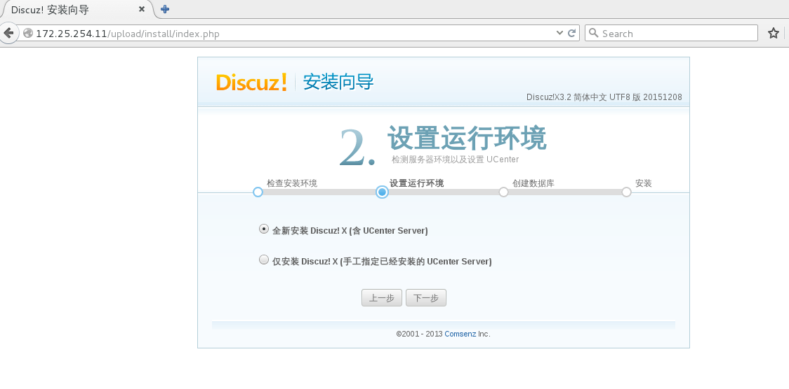
配置mysql信息。
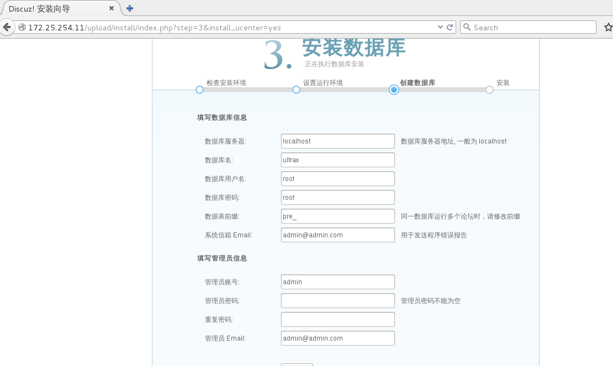
正在安装
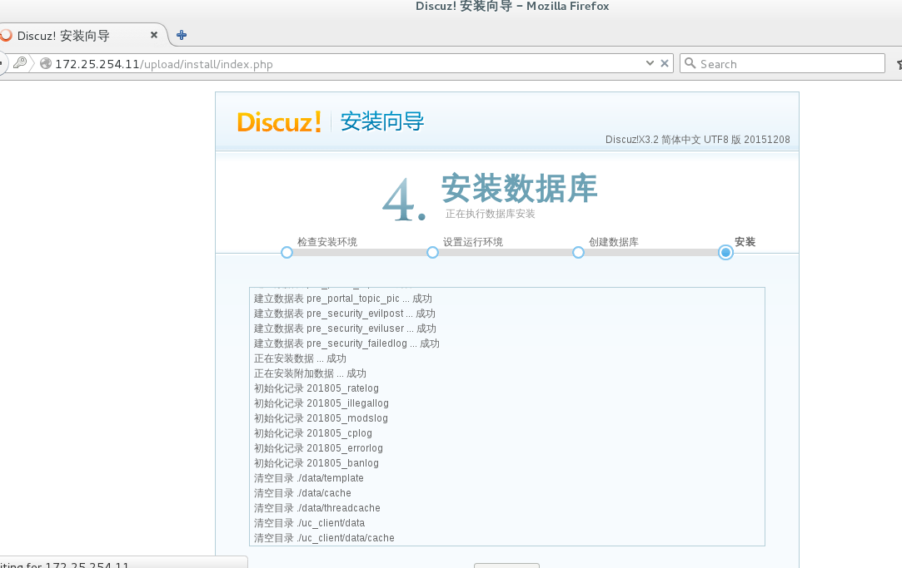
安装后就能访问了。